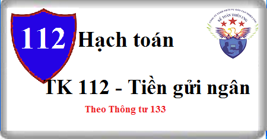

Cách định khoản hạch toán Tài khoản 112 theo Thông tư 133, cách hạch toán tiền gửi ngân hàng của Doanh nghiệp, căn cứ để hạch toán vào TK 112 – Tiền gửi ngân hàng
1. Nguyên tắc kế toán Tài khoản 112 - Tiền gửi ngân hàng
a) Tài khoản này dùng để phản ánh số hiện có và tình hình biến động tăng, giảm các khoản tiền gửi không kỳ hạn tại ngân hàng của doanh nghiệp. Căn cứ để hạch toán trên Tài khoản 112 - Tiền gửi ngân hàng là các giấy báo Có, báo Nợ hoặc bản sao kê của ngân hàng kèm theo các chứng từ gốc (ủy nhiệm chi, ủy nhiệm thu, séc chuyển khoản, séc bảo chi,…).
b) Khi nhận được chứng từ của ngân hàng gửi đến, kế toán phải kiểm tra, đối chiếu với chứng từ gốc kèm theo. Nếu có sự chênh lệch giữa số liệu trên sổ kế toán của doanh nghiệp, số liệu ở chứng từ gốc với số liệu trên chứng từ của ngân hàng thì doanh nghiệp phải thông báo cho ngân hàng để cùng đối chiếu, xác minh và xử lý kịp thời. Cuối tháng, chưa xác định được nguyên nhân chênh lệch thì kế toán ghi sổ theo số liệu của ngân hàng trên giấy báo Nợ, báo Có hoặc bản sao kê. Số chênh lệch (nếu có) ghi vào bên Nợ "Tài khoản 138 Phải thu khác” (1381) (nếu số liệu của kế toán lớn hơn số liệu của ngân hàng) hoặc ghi vào bên Có TK 338 “Phải trả, phải nộp khác” (3381) (nếu số liệu của kế toán nhỏ hơn số liệu của ngân hàng). Sang tháng sau, tiếp tục kiểm tra, đối chiếu, xác định nguyên nhân để điều chỉnh số liệu ghi sổ.
c) Phải tổ chức hạch toán chi tiết số tiền gửi theo từng tài khoản ở từng ngân hàng để tiện cho việc kiểm tra, đối chiếu.
d) Khoản thấu chi ngân hàng không được ghi âm trên tài khoản tiền gửi ngân hàng mà được phản ánh tương tự như khoản vay ngân hàng.
2. Kết cấu và nội dung Tài khoản 112 - Tiền gửi ngân hàng
Bên Nợ:
- Các khoản tiền Việt Nam, ngoại tệ gửi vào ngân hàng;
- Chênh lệch tỷ giá hối đoái do đánh giá lại số dư tiền gửi ngân hàng là ngoại tệ tại thời điểm báo cáo (trường hợp tỷ giá ngoại tệ tăng so với tỷ giá ghi sổ kế toán).
Bên Có:
- Các khoản tiền Việt Nam, ngoại tệ rút ra từ ngân hàng;
- Chênh lệch tỷ giá hối đoái do đánh giá lại số dư tiền gửi ngân hàng là ngoại tệ tại thời điểm báo cáo (trường hợp tỷ giá ngoại tệ giảm so với tỷ giá ghi sổ kế toán).
Số dư bên Nợ:
Số tiền Việt Nam, ngoại tệ hiện còn gửi tại ngân hàng tại thời điểm báo cáo.
Tài khoản 112 - Tiền gửi Ngân hàng, có 2 tài khoản cấp 2:
- Tài khoản 1121 - Tiền Việt Nam: Phản ánh số tiền gửi vào, rút ra và hiện đang gửi tại ngân hàng bằng Đồng Việt Nam.
- Tài khoản 1122 - Ngoại tệ: Phản ánh số tiền gửi vào, rút ra và hiện đang gửi tại ngân hàng bằng ngoại tệ các loại đã quy đổi ra đồng tiền ghi sổ kế toán.
3. Cách hạch toán tiền gửi ngân hàng Tài khoản 112 theo TT 133:
3.1. Khi bán sản phẩm, hàng hoá, cung cấp dịch vụ thu ngay bằng tiền gửi ngân hàng, kế toán ghi nhận doanh thu, ghi:
a) Đối với sản phẩm, hàng hoá, dịch vụ, bất động sản đầu tư thuộc đối tượng chịu thuế gián thu (thuế GTGT, thuế tiêu thụ đặc biệt, thuế xuất khẩu, thuế bảo vệ môi trường), kế toán phản ánh doanh thu bán hàng và cung cấp dịch vụ theo giá bán chưa có thuế, các khoản thuế gián thu phải nộp được tách riêng theo từng loại thuế ngay khi ghi nhận doanh thu (kể cả thuế GTGT phải nộp theo phương pháp trực tiếp), ghi:
Nợ TK 112 - Tiền gửi ngân hàng (tổng giá thanh toán)
Có TK 511 - Doanh thu bán hàng và cung cấp dịch vụ (giá chưa có thuế)
Có TK 333 - Thuế và các khoản phải nộp Nhà nước.
b) Trường hợp không tách ngay được các khoản thuế phải nộp, kế toán ghi nhận doanh thu bao gồm cả thuế phải nộp. Định kỳ kế toán xác định nghĩa vụ thuế phải nộp và ghi giảm doanh thu, ghi:
Nợ TK 511 - Doanh thu bán hàng và cung cấp dịch vụ
Có TK 333 - Thuế và các khoản phải nộp Nhà nước.
3.2. Khi phát sinh các khoản doanh thu hoạt động tài chính, các khoản thu nhập khác bằng tiền gửi ngân hàng, ghi:
Nợ TK 112 - Tiền gửi ngân hàng (tổng giá thanh toán)
Có TK 515 - Doanh thu hoạt động tài chính (giá chưa có thuế GTGT)
Có TK 711 - Thu nhập khác (giá chưa có thuế GTGT)
Có TK 3331 Thuế GTGT phải nộp (33311).
3.3. Xuất quỹ tiền mặt gửi vào tài khoản tại Ngân hàng, ghi:
Nợ TK 112 - Tiền gửi Ngân hàng
Có TK 111 - Tiền mặt.
3.4. Nhận được tiền ứng trước hoặc khi khách hàng trả nợ bằng chuyển khoản, căn cứ giấy báo Có của Ngân hàng, ghi:
Nợ TK 112 - Tiền gửi Ngân hàng
Có Tài khoản 131 Phải thu khách hàng.
3.5. Thu hồi các khoản nợ phải thu, cho vay, ký cược, ký quỹ bằng tiền gửi ngân hàng; Nhận ký quỹ, ký cược của các doanh nghiệp khác bằng tiền gửi ngân hàng, ghi:
Nợ TK 112 - Tiền gửi Ngân hàng
Có các Tài Khoản 128, 131, 141, 138, 338
3.7. Khi bán các khoản đầu tư ngắn hạn, dài hạn thu bằng tiền gửi ngân hàng, kế toán ghi nhận chênh lệch giữa số tiền thu được và giá vốn khoản đầu tư vào doanh thu hoạt động tài chính hoặc chi phí tài chính, ghi:
Nợ TK 112 - Tiền gửi Ngân hàng
Nợ TK 635 - Chi phí tài chính
Có Tài khoản 121, 128, 228 (giá vốn)
Có TK 515 - Doanh thu hoạt động tài chính.
3.8. Khi nhận được vốn góp của chủ sở hữu bằng tiền gửi ngân hàng, ghi:
Nợ TK 112 - Tiền gửi Ngân hàng
Có TK 411 Vốn đầu tư của chủ sở hữu.
3.9. Khi bên kế toán cho BCC nhận tiền của các bên trong hợp đồng hợp tác kinh doanh không thành lập pháp nhân để trang trải cho các hoạt động chung, ghi:
Nợ TK 112 - Tiền gửi Ngân hàng
Có TK 338 Phải trả phải nộp khác
3.10. Rút tiền gửi Ngân hàng về nhập quỹ tiền mặt, chuyển tiền gửi Ngân hàng đi ký quỹ, ký cược, ghi:
Nợ TK 111 - Tiền mặt
Nợ TK 138 – Phải thu khác (1386)
Có TK 112 - Tiền gửi Ngân hàng.
3.11. Mua chứng khoán, cho vay hoặc đầu tư vào đơn vị khác bằng tiền gửi ngân hàng, ghi:
Nợ các TK 121, 128, 228
Có TK 112 - Tiền gửi Ngân hàng.
3.12. Mua hàng tồn kho (theo phương pháp kê khai thường xuyên), mua TSCĐ, chi cho hoạt động đầu tư XDCB bằng tiền gửi ngân hàng, ghi:
- Nếu thuế GTGT đầu vào được khấu trừ, kế toán phản ánh giá mua không bao gồm thuế GTGT, ghi:
Nợ các Tài khoản 151, 152, 153, 156, 211, 241
Nợ TK 133 - Thuế GTGT được khấu trừ (1331)
Có TK 112 - Tiền gửi Ngân hàng.
- Nếu thuế GTGT đầu vào không được khấu trừ, kế toán phản ánh giá mua bao gồm cả thuế GTGT.
3.13. Mua hàng tồn kho bằng tiền gửi ngân hàng (theo phương pháp kiểm kê định kỳ), nếu thuế GTGT đầu vào được khấu trừ, ghi:
Nợ TK 611 - Mua hàng
Nợ TK 133 - Thuế GTGT được khấu trừ (1331)
Có TK 112 - Tiền gửi Ngân hàng.
Nếu thuế GTGT đầu vào không được khấu trừ, kế toán phản ánh giá mua bao gồm cả thuế GTGT.
3.14. Khi mua nguyên vật liệu thanh toán bằng tiền gửi ngân hàng sử dụng ngay vào sản xuất, kinh doanh, nếu thuế GTGT đầu vào được khấu trừ, ghi:
Nợ các Tài khoản 154, 642, 242...
Nợ TK 133 - Thuế GTGT được khấu trừ (1331)
Có TK 112 - Tiền gửi Ngân hàng.
Nếu thuế GTGT đầu vào không được khấu trừ, kế toán phản ánh chi phí bao gồm cả thuế GTGT.
3.15. Thanh toán các khoản nợ phải trả bằng tiền gửi ngân hàng, ghi:
Nợ các TK 331, 333, 334, 335, 338, 341
Có TK 112 - Tiền gửi Ngân hàng.
3.16 Thanh toán các khoản chi phí tài chính, chi phí khác phát sinh bằng tiền gửi ngân hàng, ghi:
Nợ các TK 635, 811
Nợ TK 133 - Thuế GTGT được khấu trừ (nếu có)
Có TK 112 - Tiền gửi Ngân hàng.
3.17. Trả vốn góp cho các bạn góp vốn, chi các quỹ khen thưởng, phúc lợi bằng tiền gửi Ngân hàng, ghi:
Nợ TK 411 - Vốn đầu tư của chủ sở hữu
Nợ TK 353 - Quỹ khen thưởng, phúc lợi
Có TK 112 - Tiền gửi Ngân hàng.
3.18. Thanh toán các khoản chiết khấu thương mại, giảm giá hàng bán, hàng bán bị trả lại bằng tiền gửi ngân hàng, ghi:
Nợ TK 511 - Các khoản giảm trừ doanh thu
Nợ TK 3331- Thuế GTGT phải nộp (33311)
Có TK 112 - Tiền gửi Ngân hàng.
3.19. Các nghiệp vụ kinh tế liên quan đến ngoại tệ: Phương pháp kế toán các giao dịch liên quan đến ngoại tệ là tiền gửi ngân hàng thực hiện tương tự như ngoại tệ là tiền mặt (xem tài khoản 111).
Chi tiết xem tại đây: Cách hạch toán tài khoản 111
-----------------------------
